11 Operations and analytics
If a sports team has two core competencies, they are managing events and selling tickets. A smooth operation is also a pillar of the product, and it shapes how fans perceive the brand. The job of operations, broadly, is to get fans into, around, and out of the venue safely, quickly, and conveniently. That involves design, systems, and technology, plus optimization questions: how many point-of-sale units, how much security labor, how many restrooms, how many seats in a section. The list is long.
This chapter borrows from the overlapping fields of operations research, industrial engineering, and operations management to work two common venue problems. As with the rest of the book, the aim is to make you aware of how to approach them — the ocean only gets deeper. Venues are increasingly built around new capabilities: phone-based food ordering, digital tickets, advanced security scanning, facial recognition, integrated commerce and loyalty, and integrated transit. Each solves a problem and can create new ones. Mobile food ordering without considering kitchen locations invites quality problems. Never adopt a technology without examining whether you can actually execute it; businesses are littered with the husks of solutions that were a poor fit or a pet project.
At a high level this chapter aims to:
- Introduce some basic operations problems and solutions
- Touch on project management
- Convey the complexity of venue operations
11.1 Understanding ingress
Capacity constraints are unavoidable at the gates. Put 30,000 people in front of the same doors at the same time and lines form. The Romans understood this — the Colosseum’s 76 vomitoria moved 50,000 people, and it was probably more efficient at ingress than a modern stadium, which has to fit magnetometers, bag checks, ticket scans, fire codes, concessions, and mechanical infrastructure into the same space. The problem extends outside too: traffic, ADA access, transit, and ride-share.
Getting thousands of people in quickly and safely runs into three kinds of constraint — capacity, technology, and procedure — and sports adds surge demand, since most fans arrive in the same short window. Technology can ease capacity limits, but it is bound up with the other two.
Eliyahu Goldratt’s The Goal (Goldratt 2004) gives a useful frame, the Theory of Constraints, as a five-step process of ongoing improvement:
- Identify the system’s bottleneck.
- Decide how to exploit it.
- Subordinate every other decision to that.
- Elevate the bottleneck.
- If a bottleneck was broken, return to step one.
A system has only one bottleneck at a time, which is what makes the process iterative — strengthen the weakest link and another becomes weakest. A typical gate process looks like Figure 11.1.
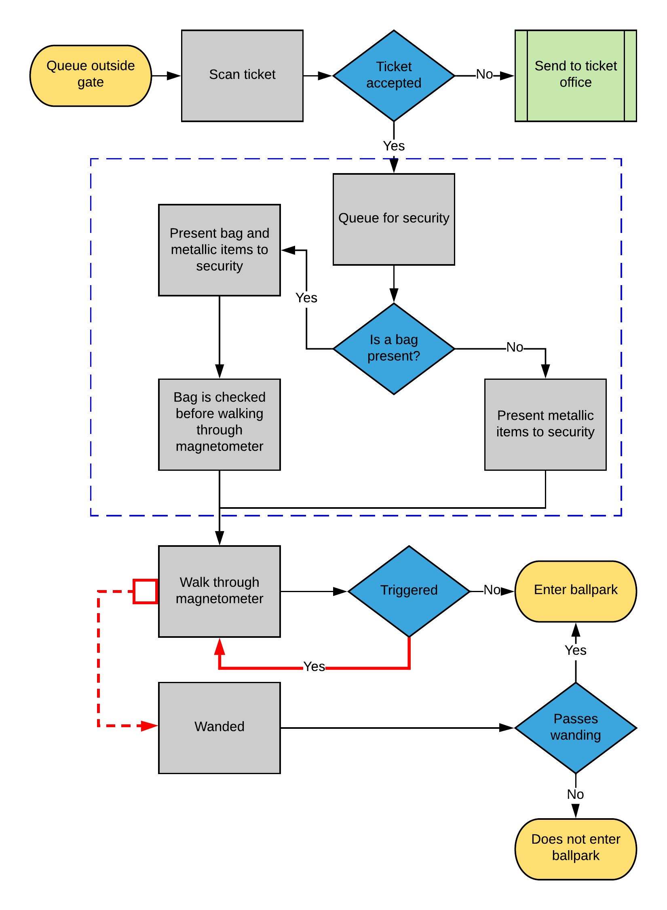
Figure 11.1: A typical gate-entry process
What data falls out of this process? Scan counts from ticketing, magnetometer passes and failures, and per-gate timing. Let’s look at aggregated scan data.
scan_data <- FOSBAAS::scan_data| observations | scans | action_time | date |
|---|---|---|---|
| 1 | 0 | 61200 secs | 4/1/2024 |
| 2 | 2 | 61260 secs | 4/1/2024 |
| 3 | 4 | 61320 secs | 4/1/2024 |
| 4 | 7 | 61380 secs | 4/1/2024 |
| 5 | 10 | 61440 secs | 4/1/2024 |
| 6 | 11 | 61500 secs | 4/1/2024 |
The data is scans per minute, bucketed across the entry window.
ggplot(scan_data, aes(x = observations, y = scans, color = date)) +
geom_point(alpha = 0.6) +
stat_smooth(method = "lm", formula = y ~ poly(x, 2), se = FALSE, color = "grey25") +
scale_color_manual("Date", values = plot_palette) +
scale_y_continuous(labels = scales::comma) +
labs(x = "Observation (minute)", y = "Scans",
title = "Scans build to a peak, then taper after first pitch") +
book_theme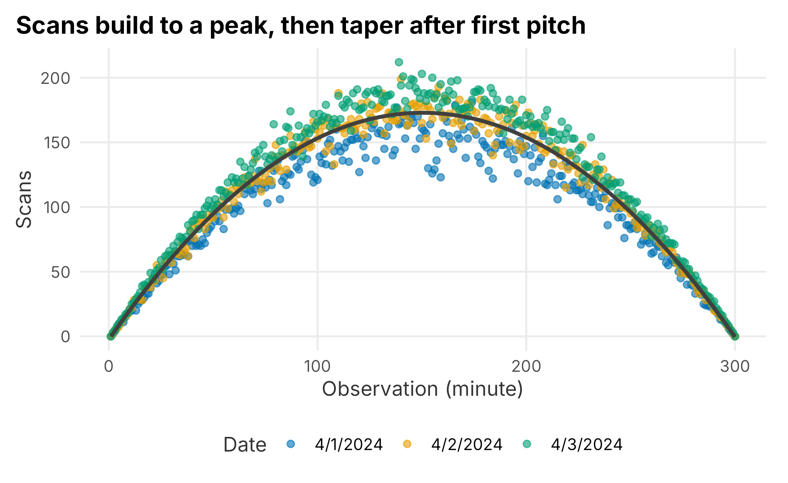
Figure 11.2: Distribution of ticket scans at the gates
Scans follow a predictable cadence — they build toward a peak and taper off. Our ballpark has four entry points with four scanners each (sixteen total). What is the system’s maximum capacity? It is harder to answer than it sounds, because gates are busier at different times; we want the busiest gate under load, which takes several days of observation.
max_scans <- scan_data |>
group_by(date) |>
summarise(
max_scans = max(scans),
max_per_scanner = max(scans) / 16,
mean_scans = mean(scans),
median_scans = median(scans),
.groups = "drop"
)| date | max_scans | max_per_scanner | mean_scans | median_scans |
|---|---|---|---|---|
| 4/1/2024 | 181 | 11.3 | 103.6 | 116 |
| 4/2/2024 | 199 | 12.4 | 115.7 | 129 |
| 4/3/2024 | 212 | 13.2 | 125.0 | 139 |
At peak, each scanner handles roughly 13 scans a minute — about one person every 4.5 seconds. But that average hides the distribution: some scans took ten seconds, many took one. We cannot tell from this data alone, which points at what is missing — the process steps timed separately, line lengths, per-gate and per-magnetometer detail, inter-arrival times, staffing, and false-positive rates. Even so, the diagram suggests a candidate bottleneck: when a magnetometer trips, the guest walks back through. Adding staff to wand those guests, or changing bag rules, might help — and you could measure the difference. Not every fix needs heavy analysis. We will treat the next problem — concession lines — in more depth.
11.2 Reducing wait times at concessions
Everyone has waited in a concession line. Ask why it is slow and you will hear “too many people” or “the staff is slow.” In reality it is a system with several parts:
- System constraints (grills, points of sale)
- Labor (experience, training, motivation)
- Back of house (buffering demand, menu design)
- Front of house (queue discipline, ordering, payment)
It is tempting to declare “we just need more registers” and be done. That is reductive. Let’s set a realistic scenario:
Executives at the Nashville Game Hens have noticed long concession lines, worse on weekends. Satisfaction surveys flag wait times as a top complaint. The concessions manager says the problem is too few points of sale once attendance passes 30,000, and proposes a large capital investment to add a new concept. An executive asks you whether that is a good idea.
Where do you start? With observation and whatever data you have — here, assume little. The manager tells you her standard is to fill an order in under ninety seconds, an industry figure she says she hits on average.
Three of the four components above are process-improvement problems, so an off-the-shelf framework fits. We will borrow DMAIC from Six Sigma — Define, Measure, Analyze, Improve, Control. Its roots are in manufacturing, but the tools adapt well.
If you use a framework, go all the way and write a project charter. A charter covers objectives, goals, timelines, budgets, stakeholders, and risks. We will focus on objectives and goals, but the broader point holds: a charter forces you to think through the problem and to document it. Undocumented projects get used against you later. Build a charter for anything involving multiple stakeholders.
11.2.1 Establishing objectives
Objectives derive from the business case and the problem statement, and can start vague (Campe 2007). A business case states why the project matters:
Customer satisfaction is linked to repeat purchases and year-over-year revenue. Satisfaction scores degrade predictably once attendance exceeds 28,000, and surveys point to concession wait times as the main driver. With over 100 games left and capital budgets due in sixty days, there is an opportunity to affect renewals.
That establishes that the project is important, must be done, and is time-boxed. Since we lack data, we will collect some before sharpening the problem.
11.2.2 Understanding the problem
A typical concession concept has eight to fifteen menu items bought at different rates with different prep times, most holdable for about twenty minutes. There are usually four to twelve points of sale. Customers queue, reach a register, order, pay, and wait for fulfillment before leaving.
The Game Hens’ concepts follow a multi-channel, single-phase queue: one register handles the whole transaction (single phase), several registers serve the line (multi-channel), and service is first-in, first-out. The key features:
- FIFO, not asynchronous
- Ordering, payment, and fulfillment all happen at the register
- Fulfillment is hard to buffer because hold times and demand vary
11.2.3 Defining the problem and goals
A clear problem statement keeps the project from sprawling:
Concession wait times across the ballpark receive low satisfaction scores (under 10% give the top rating) from season-ticket holders, and low scores correlate with a lower likelihood to renew. The vendor quotes a ninety-second service standard, but observed waits often exceed it by more than 100%.
Goals are more precise than objectives, and we cannot set firm ones without data. The initial goal is to collect it, then see how much wait time we can remove — we do not yet know whether the ninety-second standard is even meaningful.
11.3 Measurement and analysis
We will spend the rest of the chapter on a worked example of collecting and analyzing this data. You rarely have everything you need, so note what you have and plan to gather the rest. Live measurement needs a rubric, a budget, and game-day timing.
11.3.1 Data audit and capture
Be careful and consistent about capture, and mind the politics: you were told ninety seconds is being met, so what happens if your measurements disagree? Keep that in mind as you build the rubric. A data-collection plan starts from the question and specifies data types, what is measured, how it is measured and captured, and how you ensure consistency.
Some data exists already — scan data tells us how many people are in the park over time. Wait times do not; without cameras and computer vision, we measure them the old-fashioned way, with people and stopwatches. That feels crude, but with firm rules about what counts as a measurement and enough observations, the estimates are reliable. And ask whether you even need perfect data: tracking every customer everywhere is rarely worth it once you weigh it against every other expense.
11.3.2 Line length and scans
We need two data sets: scans and line length. We can generate realistic examples with package helpers.
scans_a <- f_get_scan_data(x_value = 230, y_value = 90, seed = 714, sd_mod = 10)
scans_a$action_time <- f_get_time_observations(17, 21)
scans_a$cumScans <- cumsum(scans_a$scans)Line-length data would be collected by counting the line every minute. It is noisy: four people may be in line while one orders, or one person may order for several. When data has quirks, write them down — you will have to explain them later.
line_length_a <- f_get_line_length(seed = 755, n = 300, u1 = 22, sd1 = 8, u2 = 8, sd2 = 5)
line_length_a$action_time <- f_get_time_observations(17, 21)
line_scans <- dplyr::left_join(scans_a, line_length_a, by = "action_time")| observation | lineLength | action_time |
|---|---|---|
| 1 | 9 | 17:00 |
| 2 | 6 | 17:01 |
| 3 | 12 | 17:02 |
| 4 | 27 | 17:03 |
| 5 | 12 | 17:04 |
| 6 | 12 | 17:05 |
Does line length track the number of people entering the park?
ggplot(line_scans, aes(x = cumScans, y = lineLength)) +
geom_point(color = plot_palette[1], alpha = 0.7) +
stat_smooth(method = "loess", formula = y ~ x, color = "grey25") +
scale_x_continuous(labels = scales::comma) +
labs(x = "Cumulative scans", y = "Line length",
title = "Line length peaks, but not simply with attendance") +
book_theme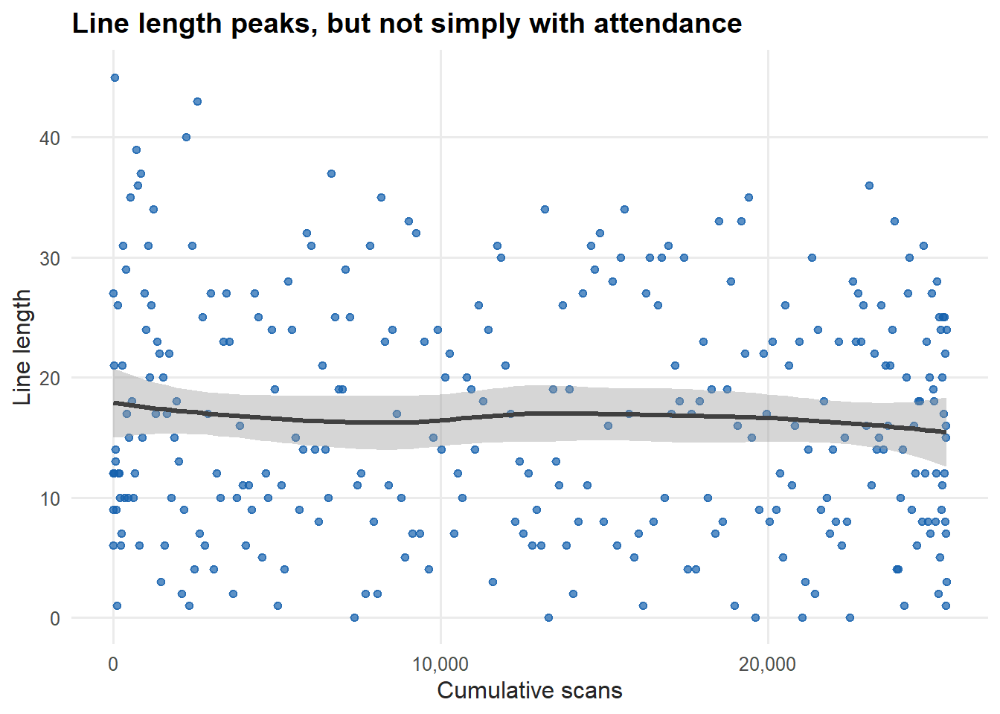
Figure 11.3: Line length versus cumulative scans
There is a pattern — lines peak at certain times — but the relationship to cumulative scans is loose. Early arrivers seem to rush the stands, while fans who arrive near first pitch sit down and buy later.
11.3.3 Analyzing the results
We can analyze this much as before, but here we introduce a generalized additive model (GAM). Be careful with it: it can fit almost anything, which is exactly why it is harder to reason about than a regression equation. We use mgcv (Wood 2021).
library(mgcv)
gam_line <- mgcv::gam(lineLength ~ s(cumScans, bs = "ps", sp = 0.2), data = line_scans)
line_scans$pred_line <- predict(gam_line)| term | estimate | std.error | statistic | p.value | conf.low | conf.high |
|---|---|---|---|---|---|---|
| (Intercept) | 16.62 | 0.566 | 29.382 | 0 | 15.511 | 17.729 |
ggplot(line_scans, aes(x = cumScans, y = lineLength)) +
geom_point(aes(color = lineLength), alpha = 0.7) +
geom_line(aes(y = pred_line), color = plot_palette[1], linewidth = 1.2) +
scale_color_gradient(low = plot_palette[2], high = plot_palette[1], guide = "none") +
scale_x_continuous(labels = scales::comma) +
labs(x = "Cumulative scans", y = "Line length",
title = "The average fit is fair, but the scatter is wide") +
book_theme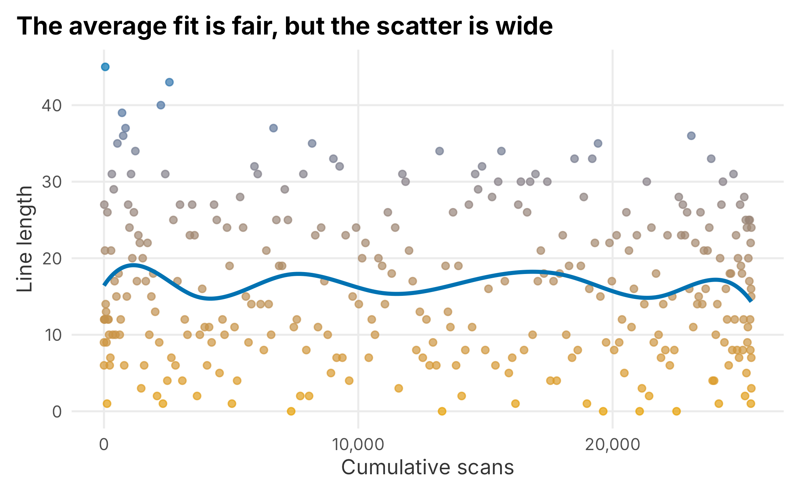
Figure 11.4: GAM fit on line-length data
The average fit is fair, but as a point estimate it is weak — there just is not a tight relationship between line length and scans. The data is multimodal: lines fall near first pitch as early arrivers finish ordering and sit down.
11.3.4 Understanding wait times
Now we look at what drives the wait itself. The package helper f_get_wait_times breaks each transaction into three exponentially distributed stages — order, payment, and fulfillment — which is what you would have had to measure directly.
wait_times_a <- f_get_wait_times(seed = 755, n = 300, rate1 = 0.03, rate2 = 0.06, rate3 = 0.15)| transaction | orderTimes | paymentTimes | fulfillTimes | totalTime |
|---|---|---|---|---|
| 1 | 39 | 28 | 0 | 67 |
| 2 | 0 | 56 | 7 | 63 |
| 3 | 123 | 4 | 4 | 131 |
| 4 | 47 | 6 | 22 | 75 |
| 5 | 4 | 38 | 10 | 52 |
| 6 | 4 | 37 | 6 | 47 |
The distribution of each stage tells us where the variance lives.
wait_dist <- wait_times_a |>
dplyr::select(orderTimes, paymentTimes, fulfillTimes) |>
tidyr::pivot_longer(everything(), names_to = "component", values_to = "seconds")
ggplot(wait_dist, aes(x = seconds, fill = component)) +
geom_density(alpha = 0.6) +
scale_fill_manual("Component", values = plot_palette) +
labs(x = "Seconds", y = "Density",
title = "Order time has the widest, longest-tailed distribution") +
book_theme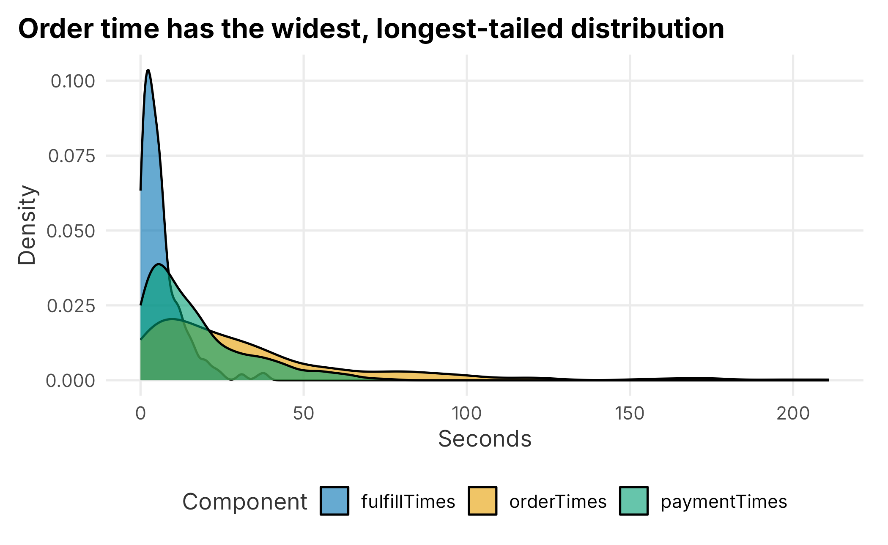
Figure 11.5: Distribution of wait-time components
Order time has the widest spread and the longest tail. Variance kills interdependent processes, and this is the variance we were hunting: reduce it and the whole process becomes more predictable.
11.3.5 Simulating a component of the process
Simulation is a large topic and exactly the right tool here. We have used rexp and rnorm to generate data from known distributions; the harder question is fitting a distribution to data we already have and then simulating it under new conditions. We will build a small Monte Carlo simulation by hand so you understand what a packaged tool does under the hood.
wait_times <- FOSBAAS::wait_times_data[1:300, ]First, which stage drives the total? A correlation table answers it.
component_cor <- wait_times |>
dplyr::select(orderTimes, paymentTimes, fulfillTimes, totalTime) |>
cor() |>
round(2)| orderTimes | paymentTimes | fulfillTimes | totalTime | |
|---|---|---|---|---|
| orderTimes | 1.00 | -0.04 | 0.00 | 0.91 |
| paymentTimes | -0.04 | 1.00 | -0.04 | 0.36 |
| fulfillTimes | 0.00 | -0.04 | 1.00 | 0.15 |
| totalTime | 0.91 | 0.36 | 0.15 | 1.00 |
Order time is by far the most correlated with total time (around 0.9), while payment and fulfillment contribute much less. That makes sense — no other work happens while a customer is ordering, and fulfillment is partly buffered. So a solution should target order time. A box plot confirms where the spread is.
wait_long <- wait_times |>
tidyr::pivot_longer(c(orderTimes, paymentTimes, fulfillTimes, totalTime),
names_to = "component", values_to = "seconds")
ggplot(wait_long, aes(x = reorder(component, seconds), y = seconds)) +
geom_boxplot(fill = plot_palette[1], alpha = 0.85, outlier.alpha = 0.4) +
labs(x = "Transaction component", y = "Seconds",
title = "Order time carries the most variance") +
book_theme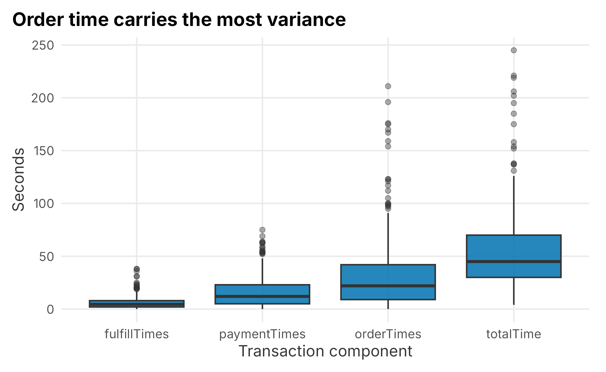
Figure 11.6: Variance of transaction components
wait_quantiles <- apply(
wait_times[, -1], 2,
function(x) quantile(x, probs = c(0.10, 0.25, 0.50, 0.75, 0.90))
)| orderTimes | paymentTimes | fulfillTimes | totalTime | |
|---|---|---|---|---|
| 10% | 3 | 1 | 1 | 19 |
| 25% | 9 | 5 | 2 | 30 |
| 50% | 22 | 12 | 4 | 45 |
| 75% | 42 | 23 | 8 | 70 |
| 90% | 81 | 39 | 14 | 107 |
The upper quartile of order times stretches far past the median — that long right tail is the real problem, because it is what makes the system unpredictable.
Because total time is just the sum of the three stages, a regression on it should fit almost perfectly. That is a useful sanity check, not a model.
time_model <- lm(totalTime ~ orderTimes + paymentTimes + fulfillTimes, data = wait_times)
summary(time_model)$r.squared## [1] 0.9997996The R-squared is essentially one. When you see that, suspect that you have simply added up the pieces — which is exactly what happened here.
11.3.5.1 Building the simulation
We fit and simulate using the wait_times_distribution_data table. We take a sample to act as our observed history.
wait_distribution <- FOSBAAS::wait_times_distribution_data
set.seed(755)
wait_sample <- wait_distribution |> dplyr::sample_frac(0.70)The empirical cumulative distribution function (ECDF) is the inverse of the quantile function — it maps a value to the share of observations at or below it.
order_cdf <- ecdf(wait_sample$orderTimes)
order_cdf(50)## [1] 0.7785714About 78% of orders take 50 seconds or less, matching the quantile at that probability. Plotting it shows the familiar S-curve.
ggplot(wait_sample, aes(x = orderTimes)) +
stat_ecdf(geom = "step", color = plot_palette[1], linewidth = 1.1) +
geom_hline(yintercept = order_cdf(50), linetype = 2, color = "grey50") +
geom_vline(xintercept = 50, linetype = 2, color = "grey50") +
scale_y_continuous(labels = scales::percent) +
labs(x = "Order time (seconds)", y = "Share of observations",
title = "Roughly 78% of orders finish within 50 seconds") +
book_theme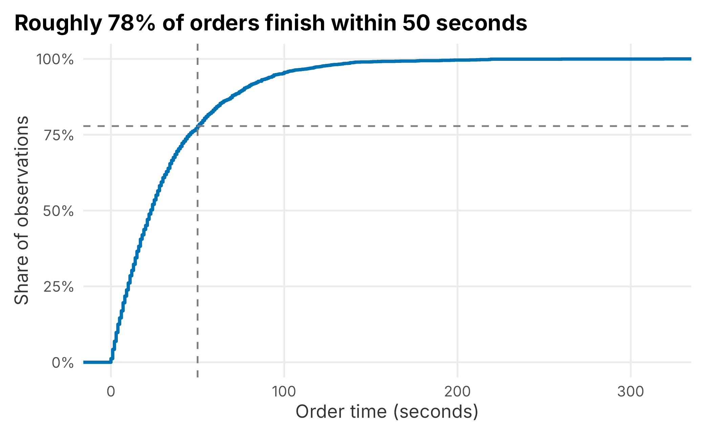
Figure 11.7: ECDF of order time
Because order time is roughly exponential, we can simulate it by drawing from an exponential with the observed mean, and compare to the real data.
set.seed(715)
sim_compare <- tibble::tibble(
Simulated = rexp(400, rate = 1 / mean(wait_sample$orderTimes)),
Actual = sample(wait_sample$orderTimes, 400)
) |>
tidyr::pivot_longer(everything(), names_to = "source", values_to = "seconds")
ggplot(sim_compare, aes(x = seconds)) +
geom_histogram(fill = plot_palette[1], color = "white", bins = 30) +
facet_wrap(~ source) +
labs(x = "Seconds", y = "Count",
title = "Simulated order times match the observed shape") +
book_theme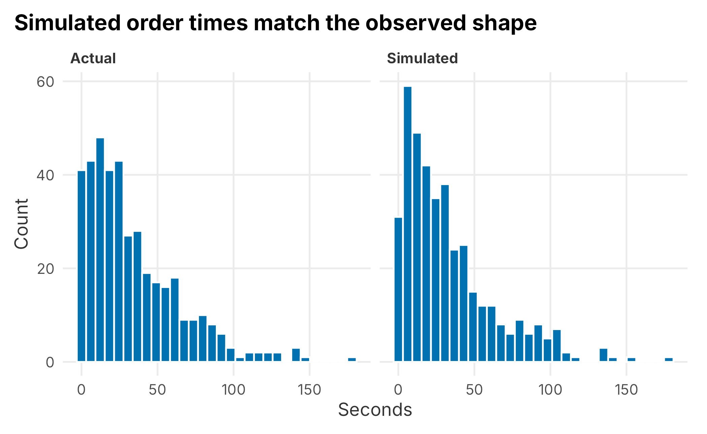
Figure 11.8: Simulated versus actual order times
The simulation matches — it should, since we fit an exponential to exponential-looking data. One run proves nothing, so we run many and average. The question:
If we cut order time in half, how would average total wait change?
n <- 500
sim_orders <- vector("list", 500)
sim_pay <- vector("list", 500)
sim_fulfill <- vector("list", 500)
for (i in 1:500) {
set.seed(i + 715)
sim_orders[[i]] <- rexp(n, rate = 1 / mean(wait_sample$orderTimes))
sim_pay[[i]] <- rexp(n, rate = 1 / mean(wait_sample$paymentTimes))
sim_fulfill[[i]] <- rexp(n, rate = 1 / mean(wait_sample$fulfillTimes))
}
mean_total <- mean(sapply(sim_orders, mean)) +
mean(sapply(sim_pay, mean)) +
mean(sapply(sim_fulfill, mean))
round(mean_total, 1)## [1] 56.5The simulated average total time matches what we observed, around 56 seconds. Now use the simulation to ask how many orders a single register could clear in an hour when the queue is always full — and how much that number varies, since variance is the whole point.
total_time_sample <- sim_orders[[1]] + sim_pay[[1]] + sim_fulfill[[1]]
set.seed(715)
served_per_hour <- numeric(30)
for (j in 1:30) {
elapsed <- 0
count <- 0
while (elapsed <= 60 * 60) {
elapsed <- elapsed + sample(total_time_sample, 1)
count <- count + 1
}
served_per_hour[j] <- count - 1
}
served <- tibble::tibble(simulation = 1:30, served = served_per_hour)
ggplot(served, aes(x = simulation, y = served)) +
geom_line(color = plot_palette[1], linewidth = 1) +
geom_hline(yintercept = 64, linetype = 4, color = "grey40") +
labs(x = "Simulated hour", y = "Fans served",
title = "Throughput swings around the ~64/hour average") +
book_theme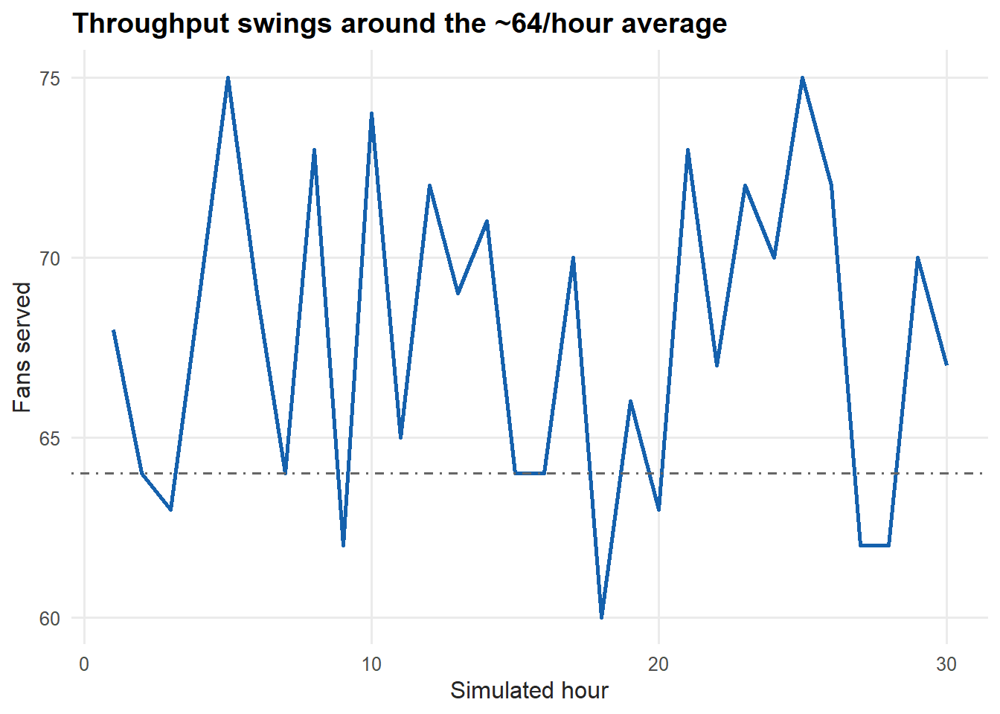
Figure 11.9: Simulated fans served per hour, per register
At a 56-second average, a register clears about 64 orders an hour (3,600 / 56). But across thirty simulated hours the count swings well above and below that line — several hours fall short purely from variance. Compound that across many registers, varying inter-arrival times, and tiring staff, and you see why reducing variance, not just adding registers, is the key to consistent throughput.
11.4 Fitting distributions
Simulation depends on fitting a distribution to your data, and there is more than one way. We build a small frequency table — really a histogram — and fit several curves to its cumulative form. The package ships a prepared table.
freq_table <- FOSBAAS::freq_table_data
freq_table$cumprob <- cumsum(freq_table$prob)| variable | Freq | prob | cumprob |
|---|---|---|---|
| 0 | 45 | 0.021 | 0.021 |
| 1 | 56 | 0.027 | 0.048 |
| 2 | 55 | 0.026 | 0.074 |
| 3 | 59 | 0.028 | 0.102 |
| 4 | 51 | 0.024 | 0.127 |
| 5 | 49 | 0.023 | 0.150 |
We try an exponential, a (deliberately overfit) fifth-degree polynomial, a GAM, and a spline.
library(mgcv)
fit_exp <- nls(variable ~ a * cumprob^m, data = freq_table, start = list(a = 300, m = 0.15))
fit_poly <- lm(variable ~ poly(cumprob, 5, raw = TRUE), data = freq_table)
fit_gam <- mgcv::gam(variable ~ s(cumprob), data = freq_table)
fit_spline <- with(freq_table, smooth.spline(cumprob, variable))
freq_table <- freq_table |>
mutate(
pred_exp = predict(fit_exp),
pred_poly = predict(fit_poly),
pred_gam = predict(fit_gam),
pred_spline = predict(fit_spline)$y
)A logit curve is a poor fit here and nls fails to converge on it — a common outcome you should expect, not fear. Plotting the fits shows which work.
fits_long <- freq_table |>
tidyr::pivot_longer(c(pred_exp, pred_poly, pred_gam, pred_spline),
names_to = "fit", values_to = "value") |>
mutate(fit = dplyr::recode(fit,
pred_exp = "Exponential", pred_poly = "Polynomial",
pred_gam = "GAM", pred_spline = "Spline"))
ggplot(freq_table, aes(x = variable, y = cumprob)) +
geom_point(alpha = 0.5, size = 1, color = "grey40") +
geom_line(data = fits_long, aes(x = value, y = cumprob, color = fit), linewidth = 1) +
scale_color_manual("Fit", values = plot_palette) +
labs(x = "Order time (seconds)", y = "Cumulative probability",
title = "GAM and spline fit well; the exponential lags") +
book_theme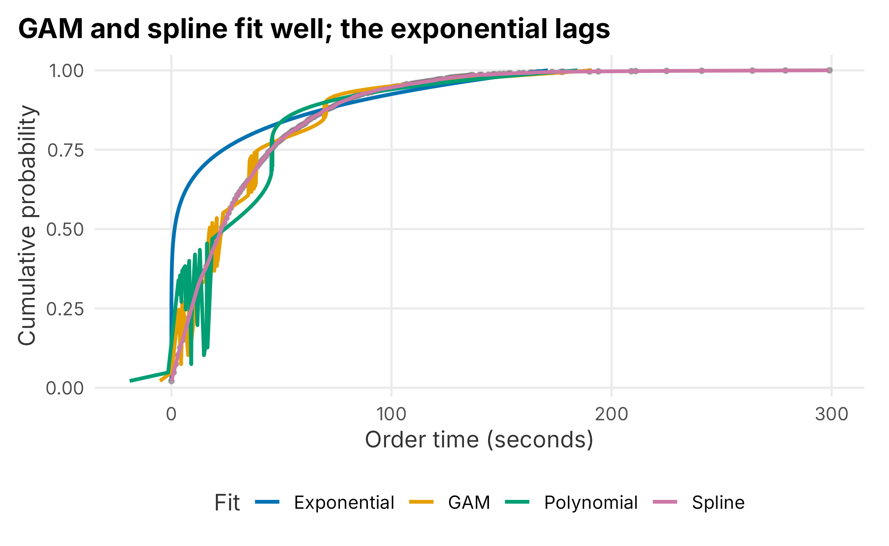
Figure 11.10: Distribution fits to the cumulative order-time data
The GAM and spline track the data closely; the exponential and polynomial fit the curve less well. For linear models you compare with ANOVA; for these, AIC and BIC are the usual tools (lower is better).
fit_diagnostics <- tibble::tibble(
model = c("Exponential", "Polynomial", "GAM"),
AIC = c(AIC(fit_exp), AIC(fit_poly), AIC(fit_gam)),
BIC = c(BIC(fit_exp), BIC(fit_poly), BIC(fit_gam))
)| model | AIC | BIC |
|---|---|---|
| Exponential | 1477 | 1486 |
| Polynomial | 1401 | 1423 |
| GAM | 1378 | 1412 |
The exponential has the worst (highest) AIC. The polynomial looks fine on the fit, which is the trap: if you simulate from it, you get garbage. Watch what happens when we run the fifth-degree fit across the full probability range.
poly_curve <- tibble::tibble(
cumprob = seq(0, 1, by = 0.005)
) |>
mutate(order_time = predict(fit_poly, newdata = tibble::tibble(cumprob = cumprob)))
ggplot(poly_curve, aes(x = order_time, y = cumprob)) +
geom_line(color = plot_palette[3], linewidth = 1.3, linetype = 3) +
labs(x = "Order time (seconds)", y = "Cumulative probability",
title = "Outside the data, the high-order polynomial falls apart") +
book_theme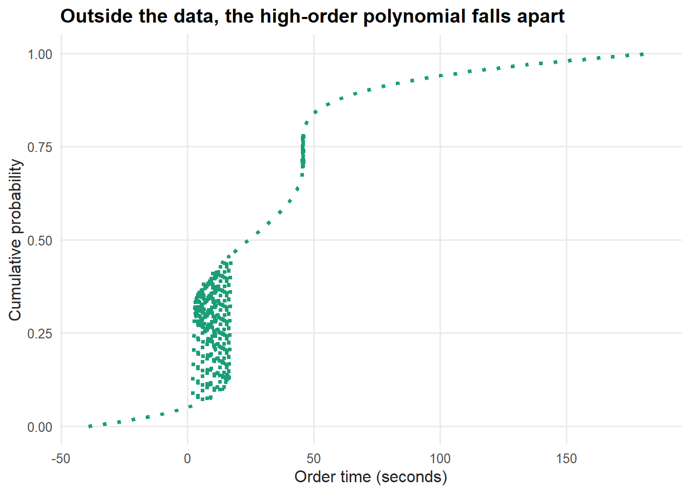
Figure 11.11: A fifth-degree polynomial produces an unusable simulated curve
That is why you avoid high-order polynomials: they fit the observed points and then misbehave everywhere else. The lesson of distribution fitting is to be careful about what you fit — think in distributions, not point estimates, and prefer a method that behaves sensibly outside the data you happened to see.
11.5 Understanding queuing systems
Queuing is a large field whose principles apply from computer engineering to amusement parks. A queuing system has three parts (Jay Heizer 2014): arrivals into the system, the queue discipline (the waiting line), and the service facility. Analyzing them leans on simulation and careful data collection, but once your assumptions are right it becomes plugging good data into equations. We adapt examples from Fundamentals of Queuing Systems (Thomopoulos 2012).
Picture a concept with a few registers and limited line space — an M/M/k/N queue: multi-server, finite capacity, with exponential inter-arrival and service times. The notation:
Average time between arrivals: \(\tau_{a} = 1/\lambda\). Average service time: \(\tau_{s} = 1/\mu\). Number of servers: \(k\). Queue capacity: \(N\). Utilization: \(\rho = \lambda/\mu\), where \(\rho/k < 1\) keeps the system stable.
When you meet Greek letters, write them out — this analysis gets confusing fast. We define the inputs for a small concept: two registers, room for five in line, an arrival roughly every ten time units, and eight units to serve each.
k <- 2 # registers (servers)
N <- 5 # queue capacity
tau_a <- 10 # average time between arrivals
tau_s <- 8 # average service time
lambda <- 1 / tau_a # arrival rate
mu <- 1 / tau_s # service rate
rho <- lambda / muThe first quantity we need is the probability that the system is empty, \(P_0\):
\[\begin{equation} P_{0} = 1 \Big/ \Big\{\sum_{n=0}^{k-1} \rho^n/n! + \frac{\rho^k}{k!}\Big[\frac{k^{N-k+1} - \rho^{N-k+1}}{(k - \rho)k^{N-k}}\Big]\Big\} \end{equation}\]
The only hard part of translating an equation like this is getting the parentheses right.
n <- seq(0, N - 1, by = 1)
P0 <- 1 / sum(
(rho^n / factorial(n)) +
(rho^k / (factorial(k) * ((k^(N - k + 1)) - (rho^(N - k + 1)) / ((k - rho) * (k^(N - k))))))
)
round(P0, 3)## [1] 0.431From there, the per-state probabilities and the expected waits follow. Rather than retype the algebra, the package wraps it in f_get_MMKN, which takes the four inputs and returns the key figures.
FOSBAAS::f_get_MMKN(k = 2, N = 5, ta = 10, ts = 8)## Metric Value
## 1 Servers: 2.000000
## 2 System Capacity: 5.000000
## 3 Time between arrivals: 10.000000
## 4 Average service time: 8.000000
## 5 Minutes in service: 8.000000
## 6 Minutes in queue: 1.267664
## 7 Minutes in system: 9.267664The output gives expected minutes in service, in the queue, and in the system. Change the inputs — more registers, a faster service time, a larger line — and you can compare configurations before spending a dollar. This is a clean model; reality adds wrinkles, such as inter-arrival times that are normal rather than exponential, and you adapt the model to fit.
11.6 Key concepts and chapter summary
Analytics applies across operations, a broad field we barely sampled. This chapter worked two angles on concession throughput — simulation and queuing — and touched several tools:
- Simulation. Monte Carlo methods are simple to build and broadly useful. We simulated wait times and measured how throughput varies, not just its average.
- Distribution fitting. Simulation rests on fitting distributions. Think in distributions, not point estimates — and avoid high-order polynomials, which fit the data and then misbehave.
- Queuing analysis. Queues are everywhere; once the assumptions hold, the analysis is plugging good data into equations.
- Project management. A charter with clear objectives and goals keeps an operations project scoped and documented.
The deeper lesson is to think about operations as a system of interrelated parts, and to resist the easy answer. The concessions manager wanted more registers; the data pointed instead at the variance in order time. Operations is a well-studied field — if you can frame the problem correctly, you can almost always find a way to analyze and improve it.
This is the last of the applied chapters. Chapter 12 steps back to reflect on how these pieces fit together into a practice.